▲ 결정지가 바둑판처럼 이어진 곰소염전 전경. 촬영 시기는 자료에 없다 ⓒ 한국관광공사 · 공공누리 제3유형(변경금지)
"곰소염전에 겨울에 가면 소금이 쌓여 있을까? 젓갈 시장은 열려 있고, 줄포만 갯벌은 볼 만할까?" 이 글은 2026년 10월 19일 기준으로 부안군 누리집과 한국관광공사 자료를 모아, 곰소에서 지금 확인되는 것과 확인되지 않는 것을 나눠 정리했다. 결론부터 말하면 관광공사 자료에서 곰소 천일염은 3월 말~4월에 시작해 10월 말까지 생산되는 소금이라, 한겨울에는 소금 대신 염전 구조물과 항구 풍경을 보는 쪽에 가깝다. 부안문화관광 바로가기
곰소는 한 장소가 아니라 염전, 항구, 젓갈단지가 줄지어 있는 마을이다. 여기에 줄포만 갯벌 정원과 변산반도 해안 명소를 이을 때 순서와 운영시간을 헷갈리기 쉬워 표로 먼저 풀었다.
💡 먼저 결론
곰소 천일염은 한국관광공사 자료상 3월 말~4월에 시작해 10월 말까지 생산된다. 곰소젓갈단지 점포의 영업시간과 휴무는 점포별로 다르다. 줄포만 노을빛 정원(구 줄포만갯벌생태공원)은 동절기(11~2월) 갯벌생태관이 09:00~17:00이고 주차는 무료다. 제18회 곰소젓갈&왕새우축제는 2026년 10월 2~4일에 이미 끝났다.
1. 먼저 정리 — 곰소는 염전·항구·젓갈단지 세 곳이다
한국관광공사는 곰소항을 부안군 진서면 진서리 일대에 있는 항구로 소개하고, 항 주변에 대규모 곰소염전과 곰소 젓갈시장·수산시장·건어물시장이 있다고 설명한다. 같은 소개문은 줄포항이 토사로 메워지자 1938년 곰섬과 범섬 등을 잇는 제방을 쌓아 만든 항만이 곰소항이라고 적는다. 곰소라는 이름은 곰처럼 생긴 두 개의 섬과 앞바다의 깊은 소(沼)에서 왔다는 설명이 붙어 있다. 대한민국 구석구석 바로가기
| 지점 | 주소 | 한 줄 정보 |
|---|---|---|
| 곰소염전 | 진서면 염전길 18 | 천일염 생산지. 한국관광공사 정보상 연중무휴·주차 가능, 이용시간은 "전화문의 요망"(0507-1367-7511) |
| 곰소항 | 진서면 진서리 일대 | 상시 개방·주차 가능. 위도 여객선이 운항된다고 소개. 문의 부안군 관광안내 콜센터 063-581-5114 |
| 곰소젓갈단지 | 진서면 곰소항길 22-3 | 취급 품목 새우젓·낙지젓·황석어젓·꼴뚜기젓 등. 영업시간·휴무는 점포별로 상이, 카드 결제 가능, 주차 가능. 문의 부안군청 관광과 063-580-4975 |
| 줄포만 노을빛 정원 | 줄포면 생태공원로 38 | 곰소와 다른 면(줄포면)에 있다. 구 줄포만갯벌생태공원. 문의 063-580-3171 |
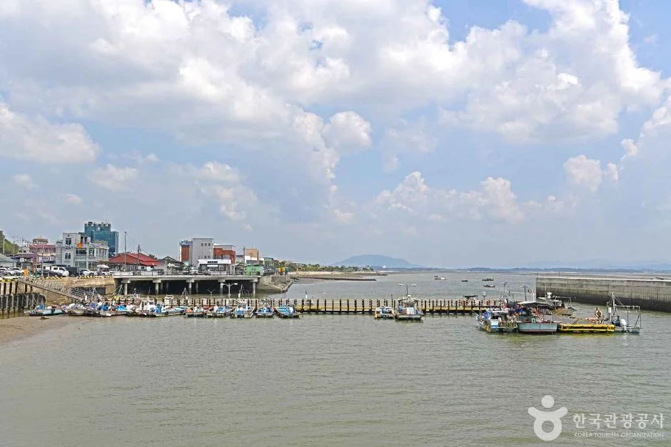
▲ 곰소항 일대의 바다와 방파제. 촬영 시기는 자료에 없다. ⓒ 한국관광공사 · 공공누리 제3유형(변경금지)
2. 곰소염전 — 소금 생산 시기와 체험 여부
한국관광공사 곰소염전 소개는 이곳을 우리나라에서 몇 안 되는 천일염 생산지로 설명하고, 지금의 염전은 일제 말기에 만들어졌으며 해방 이후부터 천일염을 생산했다고 적는다. 소금은 보통 4월에서 10월까지 생산되고 5~6월에 생산량이 가장 많다는 설명이다. 곰소젓갈단지 소개문은 3월 말에서 10월까지라고 적어, 시작 시점이 자료마다 3월 말과 4월로 다르다. 곰소염전 안내 바로가기
▲ 결정지가 바둑판처럼 이어진 곰소염전 전경. 촬영 시기는 자료에 없다. ⓒ 한국관광공사 · 공공누리 제3유형(변경금지)
소금이 만들어지는 순서도 관광공사 소개문에 나와 있다. 밀물 때 저수지에 바닷물을 가두고 증발지에서 7~8일 증발시킨 뒤 결정지로 보내 2~3일 말리면 소금이 된다는 설명이다. 이 과정이 바람과 햇볕에 의존하는 천일제염이라 겨울에는 같은 방식의 생산 풍경을 기대하기 어렵다.
| 항목 | 확인된 내용 | 확인하지 못한 것 |
|---|---|---|
| 축제 기간 염전체험 | 곰소젓갈축제 공식 누리집의 주요 행사에 "곰소염전체험"이 있다(2026 제18회, 행사 종료로 표시) | 다음 축제 일정·요금 |
| 상시 체험·견학 | 2015년 1월 작성된 관광공사 여행기사는 "한 겨울을 제외하고는 곰소염전 체험도 가능하다"고 적음 | 현재 상시 운영 여부, 시간, 요금, 예약 방법(공식 확인 필요) |
| 현장 이용 | 한국관광공사 정보에 연중무휴·주차 가능 | 이용시간 "전화문의 요망" — 0507-1367-7511 |
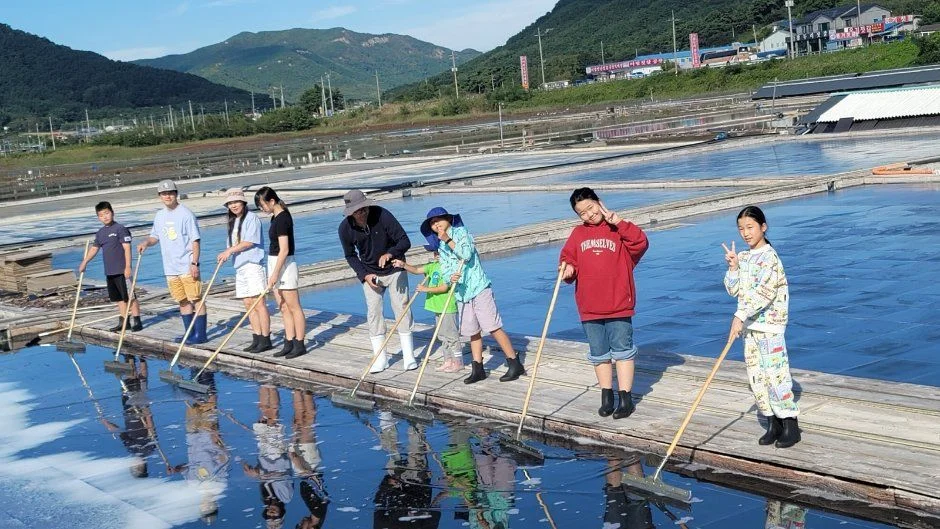
▲ 곰소젓갈&왕새우축제 사진 묶음에 포함된 염전체험 장면. 촬영 연도는 자료에 없다. ⓒ 한국관광공사 · 공공누리 제3유형(변경금지)
상시 체험 프로그램의 운영 여부는 공식 자료에서 확인하지 못했다. 이 글에서는 체험을 한다고 단정하지 않고, 방문 전에 위 전화번호나 부안군 관광안내 콜센터로 확인하는 방식을 권한다.
3. 곰소젓갈단지 — 구매 전에 확인할 것
곰소젓갈단지는 한국관광공사 소개에서 근해 어패류로 각종 젓갈을 생산하는 대규모 단지로 설명되고, 곰소 천일염으로 만든 특산물이라는 점이 함께 소개된다. 판매 품목으로는 새우젓, 낙지젓, 황석어젓, 꼴뚜기젓 등이 적혀 있다. 영업시간과 휴무가 점포별로 다르다고 안내되어 있으니, 문을 연 곳이 어디인지는 도착해서 보는 것이 가장 확실하다. 곰소젓갈단지 안내 바로가기
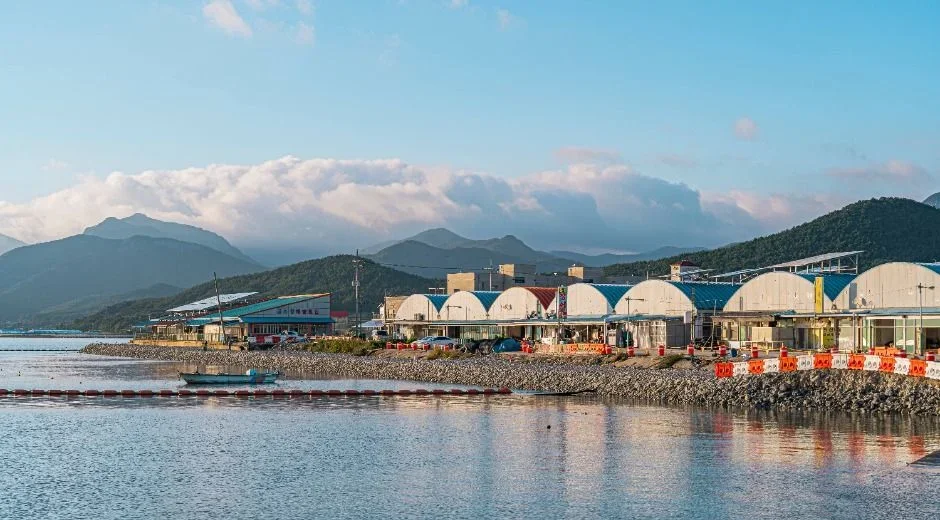
▲ 바다 건너로 본 젓갈단지 일대. 촬영 시기는 자료에 없다. ⓒ 한국관광공사 · 공공누리 제1유형
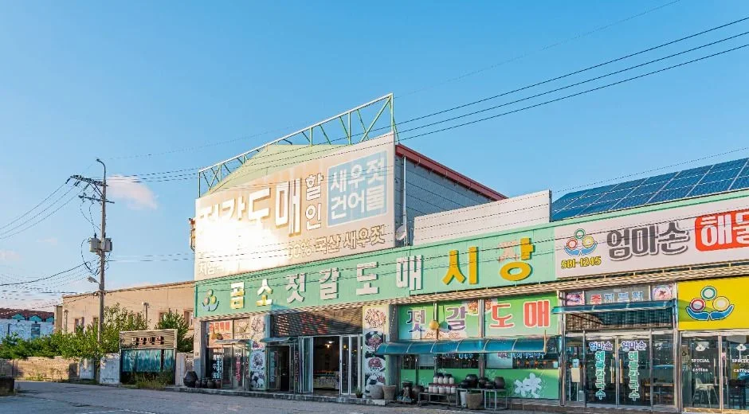
▲ 곰소 젓갈 상가의 정면. 촬영 시기는 자료에 없다. ⓒ 한국관광공사 · 공공누리 제1유형
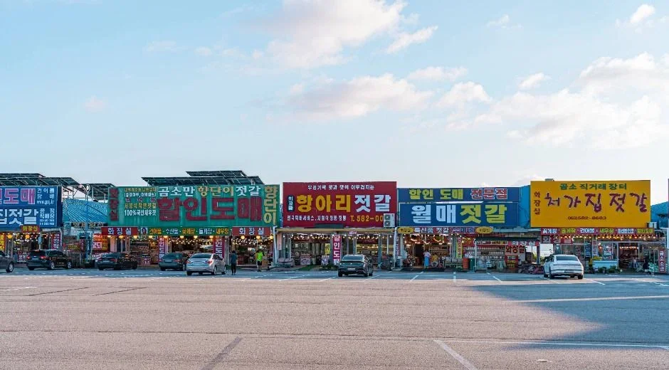
▲ 주차 공간 너머로 상점이 늘어선 젓갈단지 거리. ⓒ 한국관광공사 · 공공누리 제1유형
| 점검 항목 | 왜 보는가 | 근거 수준 |
|---|---|---|
| 포장 표시(원산지·제조일·보관방법) | 젓갈은 보관 조건에 따라 보관 기간이 달라 포장 표시를 확인하는 것이 기본 | 일반 식품 표시 확인(곰소 공식 구매 기준 아님) |
| 시식 후 구매 | 점포마다 간과 맛이 다르다 | 현장 점검 |
| 가격 | 공식 자료에 점포별 가격표가 없고 시기·품목에 따라 달라지므로 이 글에서는 가격을 적지 않음 | 확인하지 못함 |
| 결제·택배 | 관광공사 정보상 카드 결제 가능으로 표기. 택배 여부는 점포별 확인 | 점포별 확인 |
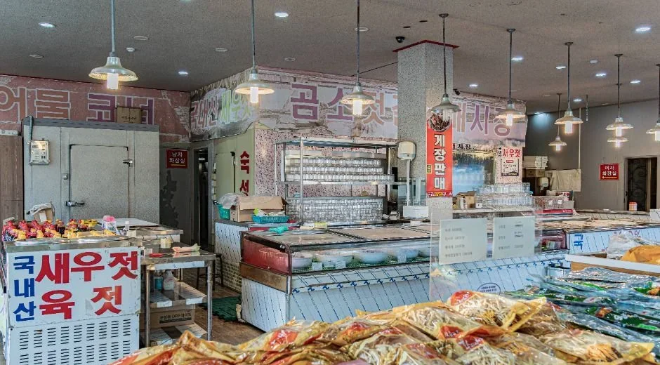
▲ 젓갈 가게 안 진열대. 사진 속 상품 가격은 자료에 없다. ⓒ 한국관광공사 · 공공누리 제1유형
축제 때는 사정이 다르다. 제18회 곰소젓갈&왕새우축제는 곰소 다용도부지 일원에서 2026년 10월 2일부터 4일까지 열렸고 현재는 종료됐다. 한국관광공사 정보에 이용요금은 무료(일부 유료)로 표기돼 있고, 젓갈과 왕새우 현장 판매가 프로그램에 포함됐다. 내년 일정은 공식 누리집에서 확인해야 한다. 곰소젓갈축제 누리집 바로가기
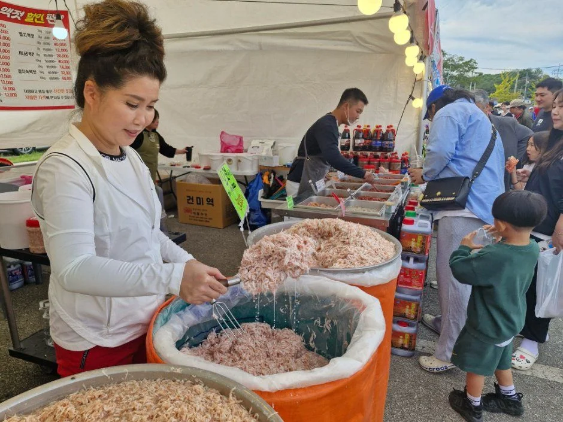
▲ 축제 현장의 젓갈 판매 부스. 제18회 축제 사진 묶음에 포함되어 있으나 정확한 촬영일은 자료에 없다. ⓒ 한국관광공사 · 공공누리 제3유형(변경금지)
4. 곰소항과 마실길 7코스 — 걷는다면
부안군 변산마실길 안내에 따르면 7코스 "곰소 소금밭길"은 왕포항, 관선마을, 작도마을, 곰소항, 발효센터공원, 곰소염전을 거치는 9.0km 구간이며 소요시간 2시간, 난이도 중으로 표기돼 있다. 곰소항과 염전을 한 번에 훑는 길이라 차를 세워 두고 걷고 싶은 사람에게 맞는다. 다만 구간 내 정확한 출발점 주차 여부는 공식 자료에서 확인하지 못했다. 변산마실길 안내 바로가기
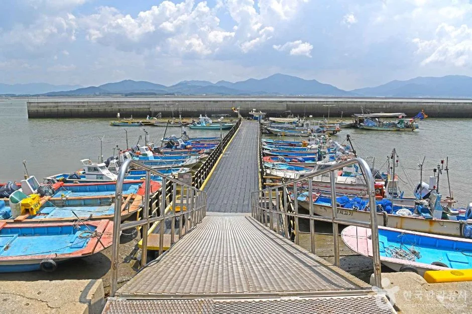
▲ 어선이 정박한 곰소항 부두. 촬영 시기는 자료에 없다. ⓒ 한국관광공사 · 공공누리 제3유형(변경금지)
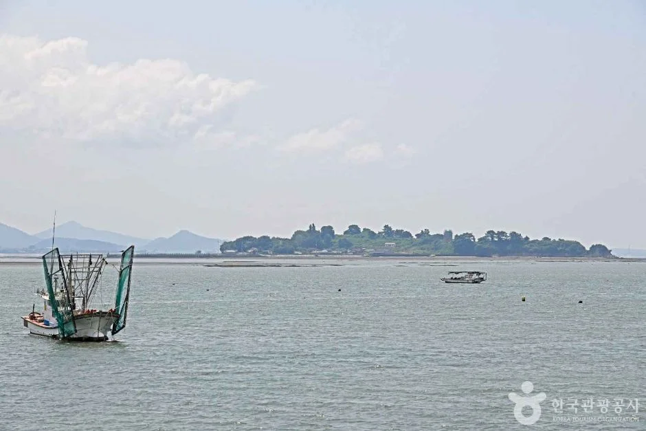
▲ 곰소 앞바다의 어선. 촬영 시기는 자료에 없다. ⓒ 한국관광공사 · 공공누리 제3유형(변경금지)
5. 겨울 곰소 — 볼 수 있는 것과 볼 수 없는 것
겨울 방문을 기준으로 공식 자료에서 말할 수 있는 범위만 나눴다. 관광공사 정보에는 겨울철 염전 운영 공지가 따로 없어, 아래 표의 "볼 수 없을 가능성"은 생산 기간이 3~10월(또는 4~10월)로 소개됐다는 사실에서 추정한 것이다.
| 구분 | 내용 | 근거 |
|---|---|---|
| 볼 수 없을 가능성이 큰 것 | 천일염 생산 장면. 생산 기간이 3~10월 안팎으로 소개됨 | 한국관광공사 |
| 공식 확인이 안 되는 것 | 염전체험 운영 여부(2015년 기사는 한겨울 제외라고 함), 점포별 겨울 영업시간 | 한국관광공사 2015 기사·점포별 상이 |
| 볼 수 있는 것 | 곰소항 어선·부두(곰소항은 상시 개방), 젓갈단지 점포(점포별 영업) | 한국관광공사 |
| 관광공사 기사 묘사 | "겨울 곰소염전은 소금 대신 소금처럼 반짝이는 얼음 눈꽃으로 채워진 생경한 풍경"(2015년 1월 작성 정보) | 한국관광공사 여행기사 |
| 줄포만 갯벌생태관 | 동절기(11~2월) 09:00~17:00, 정원은 일몰까지 | 부안군 공식 요금안내 |
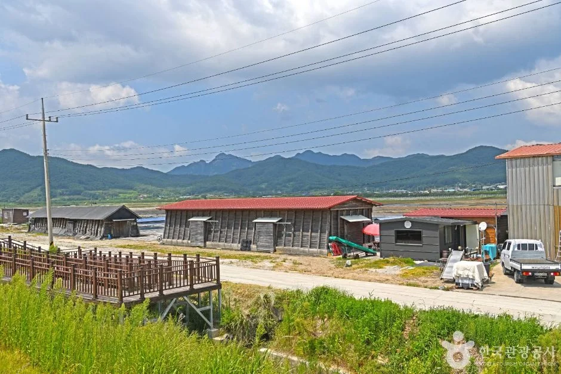
▲ 염전 창고와 산이 이어진 곰소염전 풍경. 촬영 시기는 자료에 없다. ⓒ 한국관광공사 · 공공누리 제3유형(변경금지)
6. 줄포만 노을빛 정원 — 갯벌 정원은 어떻게 이용하나
부안군 공식 요금안내에 따르면 줄포만 노을빛 정원의 갯벌생태관은 하절기(3~10월) 09:00~18:00, 동절기(11~2월) 09:00~17:00에 운영하며 퇴관 30분 전까지 입장해야 한다. 점심시간 12:00~13:00에는 이용할 수 없고, 휴관은 매주 월요일(공휴일과 겹치면 다음 날), 1월 1일, 설날, 추석이다. 주차는 무료로 안내된다. 줄포만 노을빛 정원 이용안내 바로가기
| 항목 | 요금 | 비고 |
|---|---|---|
| 갯벌생태관 관람료(7~12세) | 1,000원 | 1회 30분 |
| 갯벌생태관 관람료(13~18세) | 2,000원 | |
| 갯벌생태관 관람료(19~64세) | 3,000원 | 20명 이상 단체 1인 2,000원 |
| 생태보트 | 중학생 이상 7,000원 / 초등학생 이하 5,000원 | 약 25~30분, 월요일 체험 불가 |
| 수상자전거 | 중학생 이상 5,000원 / 초등학생 이하 3,000원 | 30분, 1대 2명. 다른 안내 페이지에서 금액을 달리 표기한 곳이 있어 전화 확인(063-580-3171) |
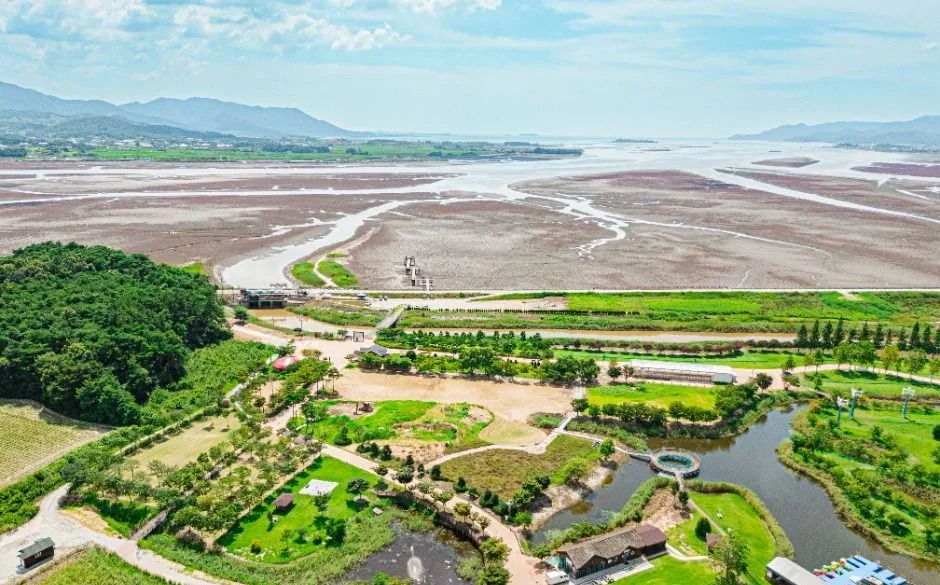
▲ 줄포만 갯벌과 정원 일대를 위에서 본 장면. 촬영 시기는 자료에 없다. ⓒ 한국관광공사 · 공공누리 제1유형
한국관광공사 소개에 따르면 정원 앞 갯벌은 2010년 1월 람사르 습지로 등록됐고, 칠면초 군락은 초가을에 붉게 물든다고 한다. 겨울의 모습이 어떤지는 자료에 없다. 동절기 수상레저 운영 여부도 공식 페이지에서 확인하지 못했으니 겨울에 보트 체험을 계획한다면 먼저 전화로 확인해야 한다.
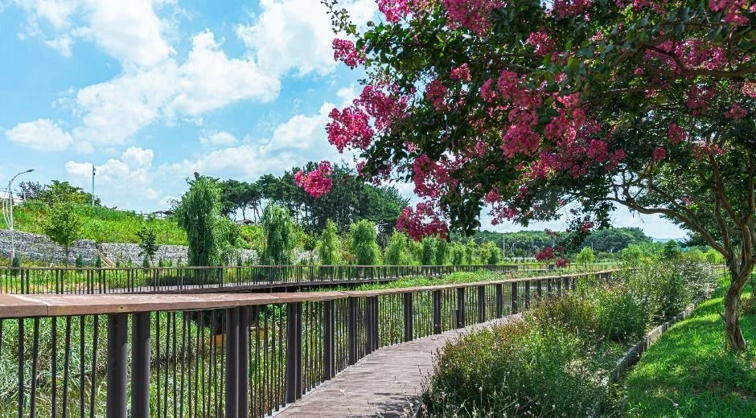
▲ 정원 안 산책 데크. 촬영 시기는 자료에 없다. ⓒ 한국관광공사 · 공공누리 제1유형
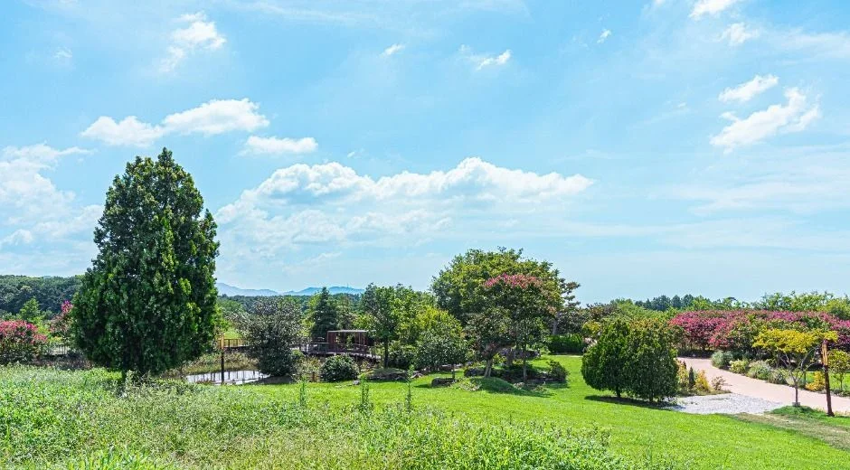
▲ 정원의 잔디밭 일대. 초록이 짙은 모습으로 보아 따뜻한 계절의 사진으로 보인다. ⓒ 한국관광공사 · 공공누리 제1유형
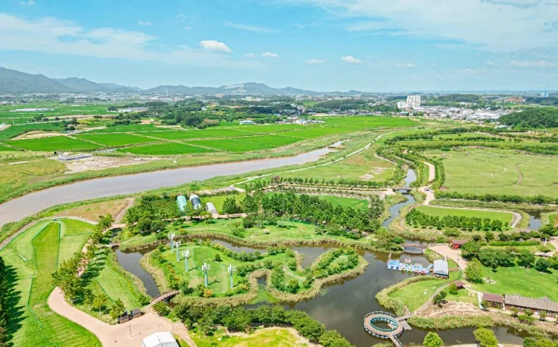
▲ 습지와 물길이 이어진 정원 인근의 항공 전경. 촬영 시기는 자료에 없다. ⓒ 한국관광공사 · 공공누리 제1유형
7. 변산 연계와 반나절 코스
변산반도의 채석강·격포·내소사는 이미 다룬 기사가 있어 여기서는 연결만 짚는다. 내소사 기사는 격포에서 곰소 방향 해안도로와 곰소염전까지 이어 붙이는 드라이브를 소개했고, 이 글은 그 곰소 구간을 세부로 푼 것이다. 내소사 경내와 전나무숲길은 부안 내소사 기사에, 바다 위 도로로 이어 가는 길은 새만금 방조제 드라이브 기사에 있다. 곰소에서 남쪽으로 내려가면 고창 선운산·고창읍성 코스 기사와 이어진다. 구간별 이동 시간은 공식 수치가 없어 적지 않았다.
| 순서 | 할 일 | 체크 |
|---|---|---|
| 오전 | 곰소염전 외곽 둘러보기, 마실길 7코스 일부 | 염전 이용시간은 전화 확인(0507-1367-7511) |
| 점심 | 곰소항 주변 식사·젓갈단지 | 점포별 영업시간 상이 |
| 오후 | 젓갈 구매 | 포장 표시 확인, 가격은 점포별 |
| 선택 | 줄포만 노을빛 정원(생태관 동절기 17시까지) | 월요일 휴관, 12~13시 점심시간 |
✅ 출발 전 체크
1) 염전 소금 생산은 3~10월 안팎, 겨울엔 생산 장면이 없을 가능성이 큼 2) 염전체험 상시 운영은 확인하지 못했으니 0507-1367-7511 문의 3) 젓갈단지는 점포별 영업시간·휴무가 다르고 가격은 공식 자료에 없음 4) 줄포만 생태관은 월요일 휴관, 동절기 09:00~17:00, 주차 무료 5) 제18회 곰소젓갈&왕새우축제는 10월 2~4일에 종료
8. 정리
곰소는 염전·항구·젓갈단지가 이어진 마을이고, 줄포만 갯벌 정원은 옆 면(줄포면)에 있다. 천일염은 3~10월 안팎에 생산돼 겨울에는 생산 장면보다 항구와 젓갈단지 쪽이 중심이 된다. 줄포만 노을빛 정원의 갯벌생태관은 동절기에도 09:00~17:00 운영하고 주차는 무료다.
곰소염전 상시 체험·견학의 운영 시간과 요금, 젓갈단지 개별 점포 시간과 가격, 곰소 주차장 면수, 겨울철 염전 개방 여부는 확인하지 못했다. 이 기사는 2026년 10월 19일 기준이므로 방문 전 부안군 관광안내 콜센터(063-581-5114)에 확인하자.